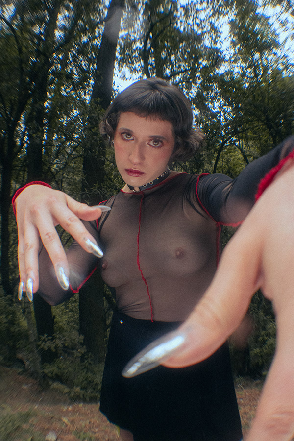

"In-Land", Milo Miranda, Mexico City, Mexico and Tilburg, The Netherlands
Reintegrating the senses through active meditation results in an epilogue of adrenaline and power. Mind, body and spirit are the unit of success by practice downhill (longboard). With worldwide professional support and led by representatives male, female participation opens the way to the disintegration of the gender favoritism in extreme sports. Longboarders unify thoughts, emotions and strengths about wheels and a board. The intuition of the moment is threatened by the vulnerability, with a speed that ranges between 60 and 146 km / h. Adrenaline and confidence collide to give life to one of the greatest dreams of humanity: fly for a few minutes.
